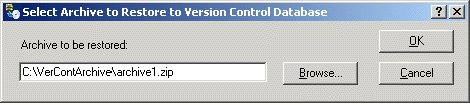

Restoring a Version Control database from an archive
Archived Version Control data that has not been purged from the Version Control database can be restored to the current Version Control database. You can restore any or all items from a Version Control archive to the Version Control database. When a single item is selected for restore, all versions of the item in the archive are restored. The Version Control Restore Database application is accessed from the DeltaV Database Administrator application.
Double-click the Version Control Restore Database icon to open the Select Archive to Restore to Version Control Database dialog and type in or browse to the archive file to be restored. If you are typing in a path to a remote location, be sure to use the UNC path (\\Servername\Sharename\Directory\Filename). Archive files have a .ZIP extension.

After entering the archive file name, click OK to open the Restore Archived Items to Version Control Database dialog.
Select the item(s) to be restored from the Available items list. To select an item, click the grey box to the left of the item name. Use the Add, Remove, Add All, and Remove All buttons to move the items between the Available items and Selected items lists. When you have selected all the items that you want to restore, click the Restore button. The items in the Selected items list are restored to the current Version Control database.
Restoring an archived item restores the data of all versions of that item. Restored items can be cleaned from the Version Control database.